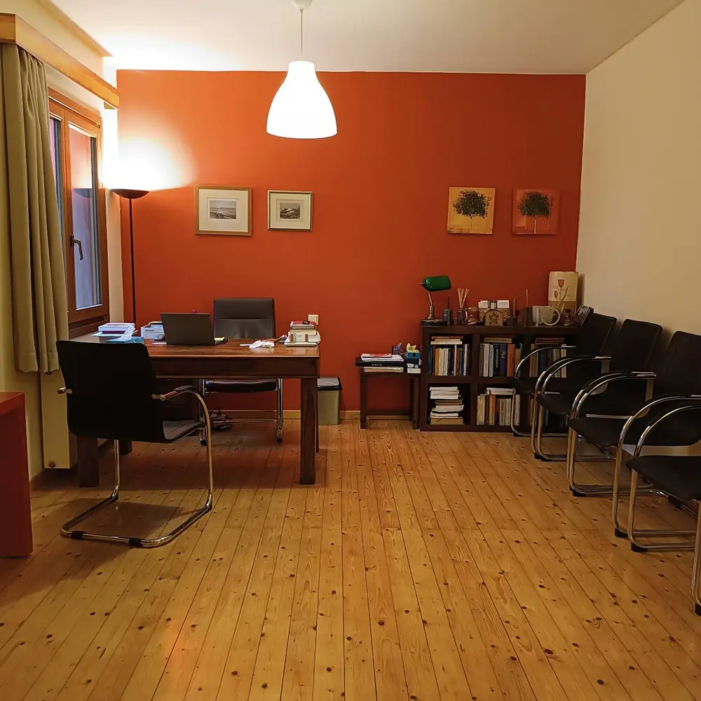

Στέλα Καρανίκα · Ψυχοθεραπεύτρια
Ψυχοθεραπεία και ψυχόδραμα στη Δροσιά
Ψυχοθεραπευτική υποστήριξη προσαρμοσμένη στις ανάγκες του καθενός, από ψυχοθεραπεύτρια με Ευρωπαϊκό Πιστοποιητικό Ψυχοθεραπείας (ECP) και πολύχρονη εμπειρία στη δημόσια υγεία.
Λίγα λόγια για μένα
Από τη νοσηλευτική στην ψυχοθεραπεία
Ειδικευμένη νοσηλεύτρια, ψυχοθεραπεύτρια, κοινωνικοθεραπεύτρια και ψυχοδραματίστρια.
Η πολύχρονη εμπειρία μου ως νοσηλεύτρια σε δημόσιες δομές υγείας με ευαισθητοποίησε στις επιπτώσεις που έχουν οι ψυχολογικοί παράγοντες στους ασθενείς και στις οικογένειές τους.
Η ανάγκη μου για μια βιοψυχοκοινωνική αντιμετώπιση των θεραπευόμενων και του περιβάλλοντός τους ήταν το έναυσμα για να εκπαιδευτώ περαιτέρω σε ψυχοθεραπευτικές μεθόδους με επίκεντρο τις εξατομικευμένες ανάγκες του καθενός.
Εκπαιδεύτηκα στο Ανοικτό Ψυχοθεραπευτικό Κέντρο (Α.Ψ.Κ.), όπου ολοκλήρωσα την τετραετή μεταπτυχιακή εκπαίδευση στην Κοινωνικοθεραπεία και το Ψυχόδραμα, και από τότε εργάζομαι ως ψυχοθεραπεύτρια.
Είμαι κάτοχος του Ευρωπαϊκού Πιστοποιητικού Ψυχοθεραπείας (European Certificate for Psychotherapy – ECP) και μέλος της European Association for Psychotherapy (EAP), της Εθνικής Εταιρείας Ψυχοθεραπείας Ελλάδος (Ε.Ε.Ψ.Ε.) και της Ελληνικής Εταιρείας Θεραπευτών Κοινότητας, Κοινωνικοθεραπείας και Ψυχοδράματος (Ε.Ε.Θ.Κ.Κ.Ψ.).
Σήμερα εργάζομαι στο ιδιωτικό μου γραφείο στη Δροσιά Αττικής και συνεργάζομαι με το Α.Ψ.Κ.
Μια βιοψυχοκοινωνική ματιά: ο άνθρωπος ολόκληρος, μαζί με τις σχέσεις και το περιβάλλον του.
Προσεγγίσεις
Πώς μπορούμε να δουλέψουμε
Τρεις προσεγγίσεις που συνδέονται μεταξύ τους — και μία ματιά που τις ενώνει. Δεν υπάρχει έτοιμη συνταγή· υπάρχει ο δικός σας δρόμος.
Μιλήστε μαζί μου-
Λόγος
Ψυχοθεραπεία
Η ψυχοθεραπεία είναι ένας σταθερός, εμπιστευτικός χώρος όπου μπορείτε να μιλήσετε για ό,τι σας απασχολεί: άγχος, δυσκολίες στις σχέσεις, απώλειες, αλλαγές στη ζωή ή απλώς την αίσθηση ότι κάτι δεν πάει όπως θα θέλατε. Με συναντήσεις σε τακτική βάση προσπαθούμε μαζί να καταλάβουμε τι συμβαίνει, πώς επαναλαμβάνεται και τι θα μπορούσε να αλλάξει. Ο ρυθμός, οι στόχοι και η διάρκεια προσαρμόζονται σε εσάς — δεν υπάρχει έτοιμη συνταγή, υπάρχει ο δικός σας δρόμος.
-
Δράση
Ψυχόδραμα
Το ψυχόδραμα, που ανέπτυξε ο J. L. Moreno, είναι μια μέθοδος ψυχοθεραπείας μέσα από τη δράση. Αντί μόνο να περιγράψουμε μια κατάσταση, τη «στήνουμε» σε μια σκηνή: μια δύσκολη κουβέντα, μια σχέση, μια στιγμή από το παρελθόν ή κάτι που φοβάστε για το μέλλον. Με τεχνικές όπως η αντιστροφή ρόλων και ο καθρέφτης, βλέπετε τα πράγματα και από άλλες πλευρές, εκφράζετε ό,τι έμεινε ανείπωτο και δοκιμάζετε με ασφάλεια νέους τρόπους αντίδρασης. Δεν χρειάζεται καμία υποκριτική ικανότητα — μόνο διάθεση να δοκιμάσετε.
-
Σχέσεις
Κοινωνικοθεραπεία
Η κοινωνικοθεραπεία στηρίζεται στην ιδέα ότι δυσκολευόμαστε —και θεραπευόμαστε— μέσα από τις σχέσεις μας. Εστιάζει στο πώς συνδεόμαστε με τους άλλους, στην οικογένεια, στη δουλειά, στις φιλίες και στις ομάδες στις οποίες ανήκουμε, και στους ρόλους που παίρνουμε εκεί. Βοηθά να αναγνωρίσετε μοτίβα που επαναλαμβάνονται, να αντέξετε την ένταση μιας σχέσης και να βρείτε πιο ελεύθερες και ικανοποιητικές θέσεις απέναντι στους ανθρώπους γύρω σας.
-
Σώμα · ψυχή · οικογένεια
Ασθένεια, φροντίδα και οικογένεια
Τα πολλά χρόνια στη νοσηλευτική μού έδειξαν από κοντά τι σημαίνει μια σοβαρή ή χρόνια ασθένεια για τον ίδιο τον ασθενή και για τους δικούς του ανθρώπους. Το σώμα, η ψυχή και οι σχέσεις επηρεάζουν το ένα το άλλο. Γι' αυτό στη θεραπεία χωράνε και οι φόβοι γύρω από την υγεία, η κούραση όσων φροντίζουν και οι αλλαγές που φέρνει μια διάγνωση στην οικογένεια — με μια ματιά που βλέπει τον άνθρωπο ολόκληρο.
Το ψυχόδραμα, βήμα βήμα
Τι γίνεται στη σκηνή του ψυχοδράματος
Πατήστε σε κάθε ρόλο ή φάση για να δείτε πώς λειτουργεί η μέθοδος.
Τα ίδια εργαλεία χρησιμοποιούνται και σε ατομική συνεδρία: μια άδεια καρέκλα ή ένα αντικείμενο μπορεί να πάρει τη θέση των προσώπων της ιστορίας σας.
Το πρώτο βήμα
Πώς ξεκινάμε
- 1
Ένα τηλεφώνημα
Μιλάμε λίγα λεπτά στο τηλέφωνο, για να μου πείτε τι σας απασχολεί και να βρούμε μια ώρα που σας εξυπηρετεί.
- 2
Η πρώτη συνάντηση
Γνωριζόμαστε στο γραφείο στη Δροσιά. Μιλάμε για όσα σας φέρνουν εδώ και για το τι θα θέλατε να αλλάξει.
- 3
Αποφασίζουμε μαζί
Αποφασίζουμε μαζί αν και πώς θα συνεχίσουμε: συχνότητα, μέθοδο και ρυθμό — πάντα με τους δικούς σας όρους.
Το γραφείο
Ένας ζεστός, ήσυχος χώρος στη Δροσιά
Το γραφείο βρίσκεται σε ήσυχο δρόμο της Δροσιάς, λίγα βήματα από τη Λεωφόρο Δημοκρατίας. Ξύλινα πατώματα, έργα τέχνης στους τοίχους και ένας άνετος καναπές — ένας χώρος φτιαγμένος για να νιώθετε άνετα από την πρώτη στιγμή.
- ΔιεύθυνσηΓοργοποτάμου 7, Δροσιά 145 72
- ΩράριοΔευτέρα – Παρασκευή, 10:00 π.μ. – 9:00 μ.μ.
- ΡαντεβούΚατόπιν συνεννοήσεως
Ερωτήσεις
Συχνές ερωτήσεις
Τι είναι το ψυχόδραμα; Χρειάζεται να «παίξω θέατρο»;
Όχι. Το ψυχόδραμα είναι μέθοδος ψυχοθεραπείας που χρησιμοποιεί τη δράση και όχι μόνο τον λόγο. Δεν χρειάζεται υποκριτική ικανότητα ούτε «σωστή» απόδοση· ό,τι γίνεται στη σκηνή γίνεται με τον δικό σας ρυθμό και μόνο εφόσον το θέλετε.
Τι είναι η κοινωνικοθεραπεία;
Είναι μια προσέγγιση της ψυχοθεραπείας που δίνει ιδιαίτερο βάρος στις σχέσεις και στους ρόλους μας μέσα στην οικογένεια, στις ομάδες και στην κοινότητα. Στην πράξη συνδυάζει τον λόγο με τη δράση, ανάλογα με το τι χρειάζεται κάθε άνθρωπος.
Πόσο συχνά γίνονται οι συναντήσεις;
Η συχνότητα και η διάρκεια της θεραπείας συμφωνούνται μαζί από την πρώτη συνάντηση, ανάλογα με τις ανάγκες και τις δυνατότητές σας. Για οποιαδήποτε λεπτομέρεια μπορείτε να ρωτήσετε στο τηλέφωνο.
Είναι εμπιστευτικά όσα λέγονται στη θεραπεία;
Ναι. Ό,τι συζητιέται στη θεραπεία καλύπτεται από το επαγγελματικό απόρρητο και τον κώδικα δεοντολογίας της ψυχοθεραπείας.
Τι σημαίνει το Ευρωπαϊκό Πιστοποιητικό Ψυχοθεραπείας (ECP);
Είναι ο τίτλος της European Association for Psychotherapy που πιστοποιεί ότι ο ψυχοθεραπευτής έχει ολοκληρώσει εκπαίδευση σύμφωνα με τα ευρωπαϊκά πρότυπα: θεωρία, προσωπική θεραπεία, εποπτευόμενη κλινική πρακτική και δέσμευση σε κώδικα δεοντολογίας.
Μπορεί να με βοηθήσει η θεραπεία αν φροντίζω έναν άρρωστο άνθρωπο;
Η φροντίδα ενός ανθρώπου με σοβαρή ή χρόνια ασθένεια είναι βαρύ φορτίο. Η θεραπεία μπορεί να δώσει χώρο στην κούραση, στον φόβο και στις ενοχές που συχνά τη συνοδεύουν. Τα πολλά χρόνια στη νοσηλευτική με έχουν φέρει κοντά σε ασθενείς και οικογένειες.
Πώς κλείνω ραντεβού;
Τηλεφωνήστε στο 693 258 3606. Οι συναντήσεις γίνονται Δευτέρα έως Παρασκευή, 10:00 π.μ. – 9:00 μ.μ., κατόπιν συνεννόησης.
Πού βρίσκεται το γραφείο;
Στη Γοργοποτάμου 7, Δροσιά 145 72, λίγα βήματα από τη Λεωφόρο Δημοκρατίας. Θα βρείτε χάρτη και οδηγίες στο τέλος της σελίδας.
Επικοινωνία
Κλείστε ραντεβού στη Δροσιά
Πώς θα έρθετε: το γραφείο βρίσκεται στην οδό Γοργοποτάμου 7, ανάμεσα στις οδούς Αργυρουπόλεως και Δερβενακίων, λίγα βήματα από τη Λεωφόρο Δημοκρατίας και παράλληλα με τη Λεωφόρο Γρ. Λαμπράκη, στη Δροσιά.